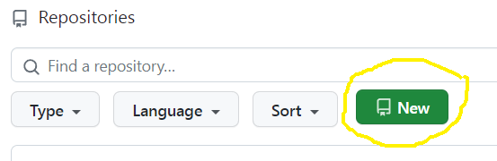

Homework 8
Last updated: Thu, 30 Nov 2023 10:23:38 -0500
Out: Mon Nov 27, 2023, 00:00 EST
Due: Sun Dec 03, 2023, 23:59 EST
Overview
In this assignment, we’ll extend the "CS450js Lang" programming language with functions!
This hw will be graded as follows:
correctness (18 pts)
design recipe (20 pts)
style (20 pts)
README (2 pts)
Setup
Create a new repository for this assignment by going to the CS450 Fall 2023 GitHub Organization page and clicking "New".

Name the repository <YOUR ACCOUNT NAME>-hw8 where <YOUR ACCOUNT NAME> is your GitHub account name.
For example, if my GitHub account is cs450student then I would name my hw8 repository cs450student-hw8.
Mark the repository as Private.
Check "Add a README file".
Add a .gitignore file for "Racket" to automatically ignore temporarily files.
When done click "Create repository".
Starter Code
Here is a hw8 starter repo. In particular, it has a tests-from-lecture.rkt file that contains the test suite you all created together in lecture.
Note: This file is meant to help you test your code for correctness, but it does not replace the tests.rkt file that you must write (which must obviously be different from this file).
Submitting
1 Before Submitting
Do not submit until all code has been thoroughly tested, independent of the autograder (if there is one), and you are reasonably sure the assignment is complete and correct.
The autograder is not a software development tool so it should not be used as one.
If you submit and get an autograder error, this means the code you wrote is not complete and correct and it’s up to you to figure out why.
The course staff is here and eager to help, of course, but cannot do so without details about what has already been tried. (For example, "why is the autograder giving an error?" is not something we can help with.)
The grading criteria (i.e., test suite) is subject to change. This means that the grade on the preliminary autograder test suite (if one is provided) is not the final grade.
2 Common Problems
Common submission problems:
a required identifier is not provided or defined in the homework file
an external file has not been uploaded to GitHub
the code is in an infinite loop, e.g., do not start a big-bang loop automatically when running a file. (Instead, it should be in a main function)
3 Files
A submission must have the following files in the repository root:
hw8.rkt: Contains the hw solution code.
To properly grade the assignment, this file should provide the following:parse450js: converts a program written as a 450jsExpr to a 450jsAST
run450js: computes the 450jsResult running a "CS450js Lang" program, represented as a 450jsAST
UNDEFINED-ERROR: the 450jsResult when running a program containing an undefined variable
ARITY-ERROR: the 450jsResult for functions that are called with the wrong number of arguments
fn-result?: a predicate that returns "true" when given a "function value" 450jsResult
All code should also follow proper Racket Style.
tests.rkt: This file should require hw8.rkt and define tests for it.
Specifically, it should define a rackunit test-suite which contains sufficient rackunit test cases (e.g., check-equal?, etc.) for each defined function.
Note: This file must be separate and different from the tests-from-lecture.rkt file that we created together in lecture.
README.md: Contains the required README information, including the GitHub repo url.
Also, the repository must have appropriate commit messages. See How to Write a Git Commit Message if you are unsure how to write a commit message.
4 GradeScope
When ready, submit this assignment to GradeScope using the "GitHub" submission feature with your hw8 repository selected.

Submission link: GradeScope HW8
HW Tasks
For this assignment, implement the "CS450js" Programming Language (that we started in lecture 21) with variables, functions, and function calls.
Note: We (will) have already gone over a complete solution to this assignment in lectures! So there should be little new work for you to come up with. Thus, grading will focus on the readability of the code, and clarity of examples and thoroughness of the tests.
- Specifically, the language should use the following 450jsExpr data definition:
450jsAtom
Variable
NOTE: syntax for bind changed on Nov 28, added brackets around binding
(list ’bind [Variable 450jsExpr] 450jsExpr)(list ’fn List<Variable> 450jsExpr)
(cons 450jsExpr List<450jsExpr>)
To simply the language, 450jsAtom are Numbers only and Variables are Symbols.
- Parsing a program in this language should produce one of the following 450jsAST structs:
(num Number)
NOTE: changed var struct name to vari on Nov 30, to avoid name conflict in Racket
(vari Symbol)
(bind Symbol 450jsAST 450jsAST)
(fn-ast List<Symbol> 450jsAST)
(call 450jsAST List<450jsAST>)
(Note that this data definition is internal the interpreter, and should only be used to help you write the parse450js and run450js functions. This means you don’t need to provide these structs and no tests will check for them.) - Running a program in this language should produce one of the following 450jsResult:
Number
UNDEFINED-ERROR
ARITY-ERROR
(Racket) Function
(fn-result List<Symbol> 450jsAST Environment)
An Environment is a list of Variable and 450jsResult pairs, as given in lecture. As mentioned above, we (will) have already gone over a complete solution to this assignment in lectures. Thus, grading will focus on readability of the code and thoroughness of the tests and examples. Here are few things to be careful about.
Concise code is readable code (most of the time). This means that any extraneous code negatively affects readability, so get rid of it!
We all love copy-pasting starter/given code, but this is bad programming practice because (1) it decreases your ability to understand the code you are writing, and (2) it tends to leave extraneous code in the program, which kills readability (and shows that you don’t understand the code you are writing —
not good!). For this assignment, any extraneous code in the program may result in large deductions. Related to above, this means that you should not include broken, commented out code in the submitted program. (Obviously, Design Recipe components in comments should remain.)
Also, related to above, do not include explicit Code Templates in the submitted program. Templates are for your own benefit to help write functions. They also help you cleanly split larger functions into smaller ones. But you dont need to leave an explicit copy in the code (it’s obvious if you followed the template or not).
Examples should help readability and be carefully selected to help explain the behavior of the functions. (They cannot be the same as the tests.) I will look to these to try to understand the code.
Tests must thoroughly test correctness. Make sure tests include both correct and error-producting programs. In this assignment, any missed corner cases may also result in large deductions.
As usual:
Just "trying to get the code working" will not earn a good grade on this assignment.
You may update existing Data Definitions (or create new ones) first, before starting to write any code. At this point in the semester, since we are no longer creating small programs, it’s unlikely that the assignment can be completely without focusing and understanding the data representations first.
All other steps of the design recipe—
e.g., name, description, signature, examples, and tests— must also be followed and will also be crucial towards successful completion of this assignment. Functions should be split properly so that each performs "one clear task". One way to know when this is the case is if the function is easy to name and explain concisely. Another way is if a function only processes one kind of data.